|
|
HELP FIND THE FOLLOWING LOCATIONS
PAGE 51
DANGER MAN: Loyalty
Always Pays
BP Research Centre, Chertsey Road, Sunbury – Drake
goes to visit the Ministry of Defence
Building
to speak to Enugu. Later, when Drake and Major Barrington attempt to
steal a copy
of the treaty with China Enugu drives over to deal with the situation.
With the
help of Beyla
(Johnny Seka),
Drake is able to get a copy of the plans out of the building.

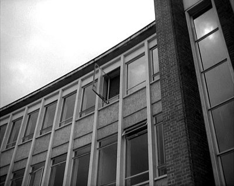
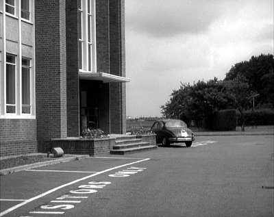
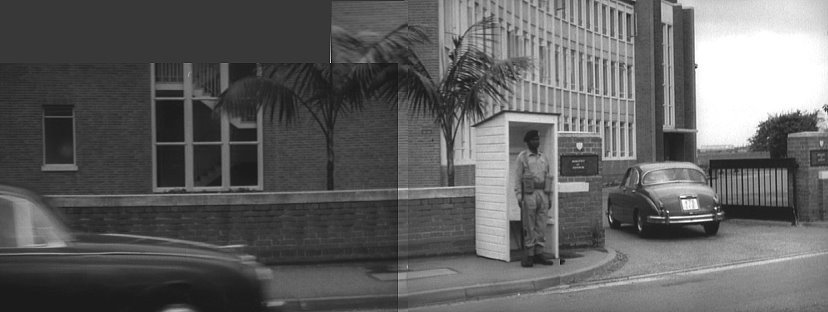
 Alan
Field - I’m
pretty certain that this
was one of the buildings of the BP Research Centre in Sunbury but can’t
prove
it as the whole complex has been completely rebuilt. The same building
appears
as the Tranquilax factory in the film HEAVENS
ABOVE.
Alan
Field - I’m
pretty certain that this
was one of the buildings of the BP Research Centre in Sunbury but can’t
prove
it as the whole complex has been completely rebuilt. The same building
appears
as the Tranquilax factory in the film HEAVENS
ABOVE.
Unknown 2 – Beyla (Johnny Seka) sabotages the power supply to the alarm system of Ministry of Defence Building.
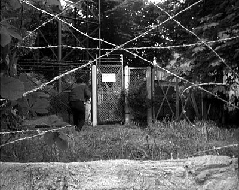
 Could be inside the Shepperton
Studio complex.
Could be inside the Shepperton
Studio complex.
Unknown 3 – Drake goes to visit the ministry of defence.
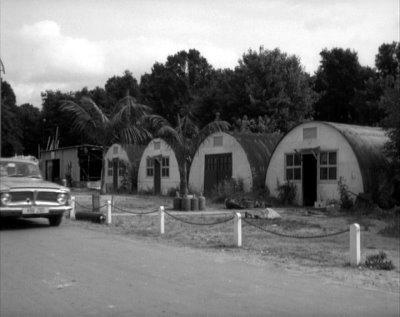
 Could be inside the Shepperton
Studio complex.
Could be inside the Shepperton
Studio complex.
(Identified by Pierre Alfonsi, April 2023)


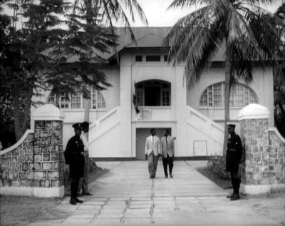

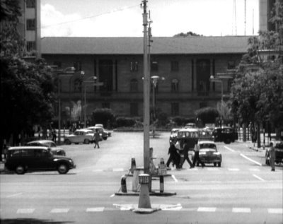

DANGER MAN: Whatever Happened To George Foster? (Don Chaffey: November 1964)
Bogota, Columbia – Riots in Santa Marco. (Headquaters of the Pan-American Conference attacked 1948 (https://youtu.be/FFIre7C9ONo?t=46) *
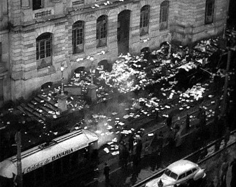
Park Lane, London –
John Drake
(Patrick McGoohan)
follows Certhia
Cooper in his Mini Cooper, from London
Airport,
through London,
to her home.
Confirmed by Geoff Dodd, June 2021
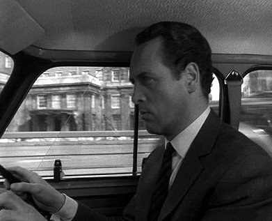
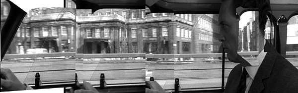
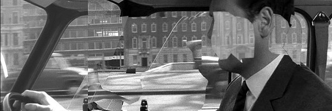
Unknown 4 – Drake goes to see Lord Ammanford at his London apartment.
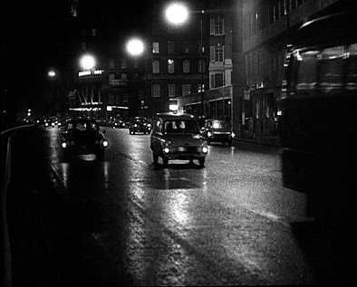
 Park
Lane?
Park
Lane?
Betchworth, Surrey, England - The home country home of Mrs
George Foster.
(Identified by Sietse Postma, February 2025)
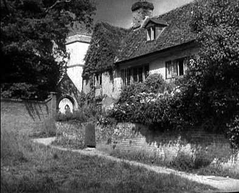
DANGER MAN: A Man to be Trusted (Peter
Maxwell: June 1964)
Unknown 1 – The home of
the
Corlanders
in Topeka
Bay.
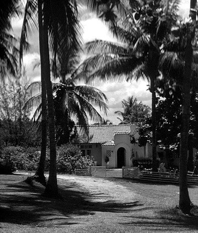
Unknown 2 – Drake is taken by Mora To Robert Corlander’s house.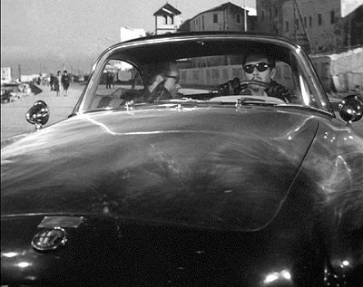
Unknown 3 – Drake is taken by to the home of British agent Dorset.
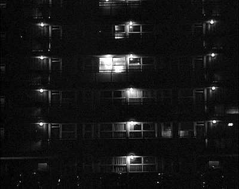
DANGER MAN: The Galloping Major (Peter
Maxwell: 1964)
Unknown 1 – The capital
city of the African country.
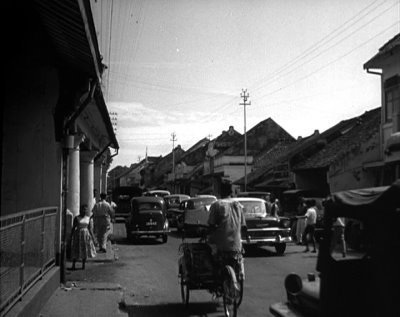
DANGER MAN: The Colonel's Daughter (Philip
Leacock: 1964)
Unknown 1 – Khan takes
Drake through Dehli
to police headquaters.
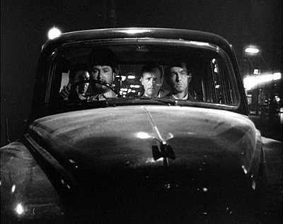
Piccadilly, London W1 - Khan takes Drake through Dehli to police headquarters.
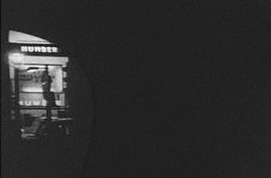
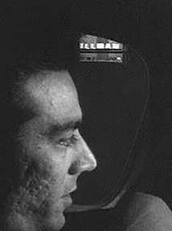
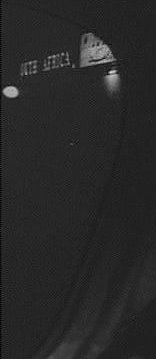
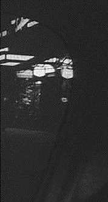
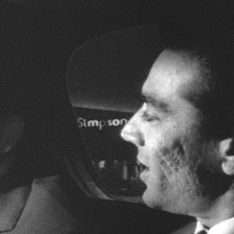
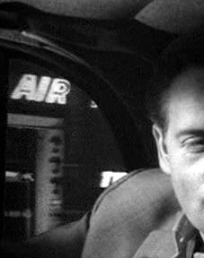
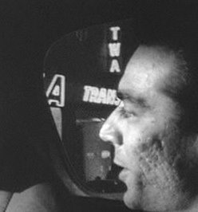
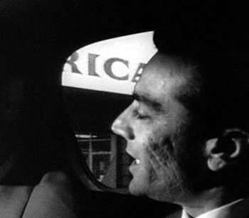
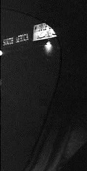
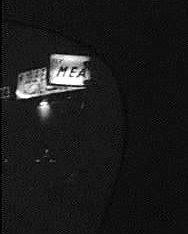
 Looks
like a London
street with lots of Airline companies.
Looks
like a London
street with lots of Airline companies.
Unknown 3 – Drake visits the expartiots club in Dehli to find out more about Cloenel Blakeleyand his daughter.
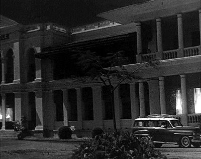
Think you know a spot? Need a bigger image? Email me.
< Previous | Index | Avengerland | Next >
Copyright © 2021 Anthony R. McKay